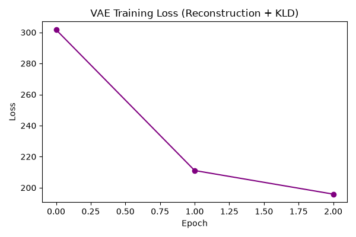
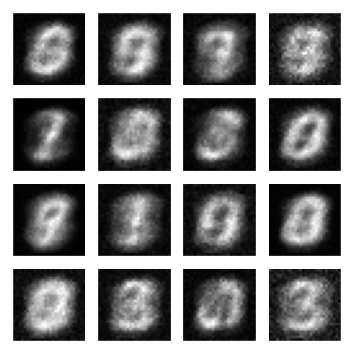

Methodology
I built a VAE using PyTorch, featuring an MLP-based encoder and decoder. The network was trained on the MNIST dataset.
- Latent Dimension: 20
- Optimizer: Adam (lr=1e-3)
- Loss Function: Binary Cross-Entropy + Kullback-Leibler (KL) Divergence
Results
The training loss below tracks the sum of the reconstruction loss (how well the model reproduces the input) and the KL divergence (how close the latent distribution is to a standard normal distribution).

By sampling randomly from the learned normal distribution in the 20-dimensional latent space and passing those vectors through the decoder, the VAE generates the following novel handwritten digits:

Conclusion
The VAE effectively learns a continuous latent representation of the dataset. Even on a limited sample size, the decoder learns to generate coherent shapes that closely resemble handwritten digits.